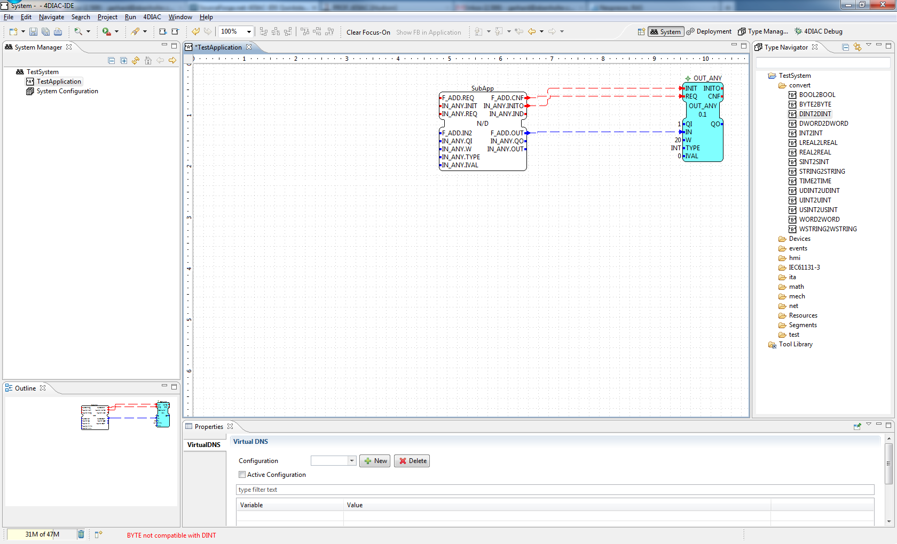

In order to start with the modelling of IEC 61499 the 4DIAC-IDE has to be changed to the System perspective.
New systems per default contain a copy the types in the tool-library (see next section). If different types are need, for example from another project or another IEC 61499 engineering tool, these type files can be easily added by copying them into the project directory at the desired place. Furthermore the Type Navigator allows to drag and drop types between projects as well as within a project to a different folder.
In order to create a new IEC 61499 System Configuration, select either
In order to create a new IEC 61499 Application, select either

Follow the instruction in the creation wizard. In the following wizard the name of the application ("Application
Name") and the corresponding System Configuration has to be specified. The number of applications that can be created is
not limited.

A double-click in the system area on an application opens the Application Editor for this specific application in the editor area.
Function Blocks from the function block type library can be added to the application by Drag & Drop functionality. Event and Data connections can be generated by connecting the Event-/Data in- and outputs. Position the mouse pointer over an Event-/Data in- or output and the connection tool is automatically selected. The connection tool is used to draw connections (event and data) between function blocks.

If the Data in- and outputs cannot be connected in case of incompatible Data Types a status message is provided in the status bar.

If the mouse pointer is close to a function block input or output the tooltip shows the corresponding type and the comment.

Selected function blocks in the Application Editor can be parameterized using the Properties View typically located below the Application Editor.
Subapplications can be used for a structured modelling of control applications. By selecting several function blocks the context menu entry New Subapplication can be used to create a subapplication.

A subapplication is presented as an IEC 61499 Function Block.

Note, all possible Event/Data Inputs and Outputs are visible which can be connected. In the Properties View the visible Event/Data Inputs and Outputs can be selected.

By double clicking the subapplication (either in the Application Editor or in the System Manager) the subapplication is opened in the editor area where the function block network of the subapplication can be modified.

If a subapplication is no longer needed, it can be "flattened" (i.e. the initial function block network can be reconstructed.

The automation hardware can be modelled with the System Configuration Editor. It can be opened by double clicking on the System Configuration tree node in the System Manager View. By using drag & drop, Device, Resource and Segment types can be added from the palette. On an IEC 61499 Device several IEC 61499 Resources can be configured. Resources can be directly added to Devices.

Device and Resource parameters can either be specified directly at each Device/Resource or via the Properties View. The Properties View shows the parameters of a IEC 61499 Device/Resource (if it is selected either in the System Configuration Editor or in the System Manager View). The most important parameters are the IP address and the port of the device management interface as they are required for the communication between the engineering tool and the Devices (e.g. Download of IEC 61499 Applications).
In order to support different device vendors' download mechanism you need to specify the device profile to be used for your device. currently 4DIAC-IDE supports the following two device profiles:

In order to get a better overview of the Devices the visual representation of a specific Device can be changed. By clicking
the green triangular icon (
 ) in the Device, the Resources get hidden (see device PC in the figure
below). Furthermore, firmware Resources are marked with the symbol
) in the Device, the Resources get hidden (see device PC in the figure
below). Furthermore, firmware Resources are marked with the symbol
 (see RMT_RES in the figure below). Firmware Resources are part of a Device
configuration and cannot be manipulated (e.g. deleted and changed as well as the mapping of function block networks is
prohibited).
(see RMT_RES in the figure below). Firmware Resources are part of a Device
configuration and cannot be manipulated (e.g. deleted and changed as well as the mapping of function block networks is
prohibited).

With the mapping the function blocks of the applications and subapplications are asigned to the resources modeled in the previouse stage. The 4DIAC-IDE provides two different alternatives for this task.
All mapped Function Blocks are marked with the following icon
 Furthermore, if the option "sync FB Color with Device Color"
is active, the color of the FB changes to the Devices color during the mapping process.
Furthermore, if the option "sync FB Color with Device Color"
is active, the color of the FB changes to the Devices color during the mapping process.
It is possible to map a Function Block Instances within the Application Editor to Devices/Resources. This can be done by right mouse clicking on a function block or subapplication which opens the context menu where the entry Hardware Mapping contains a list with all Devices and Resources. Selecting a Resource maps the selected Function Block(s) to it.

Also more than one Function Block Instance can be mapped using this method.
In order to use the Alternative 2 method for the mapping of Function Block instances the Resource Editor has to be used. A double-click on a Resource in the System Manager View opens the Resource Editor.

First of all the corresponding Application has to be selected for the mapping procedure in the top of the Resource Editor. Then, the Function Blocks can be assigned to the resources of the IEC 61499 devices by using the Drag & Drop functionality of the 4DIAC-IDE.

To unmap a Function Block instance from a Resource, the context menu entry Unmap of a Function Block in the corresponding Application or Resource Editor is used.